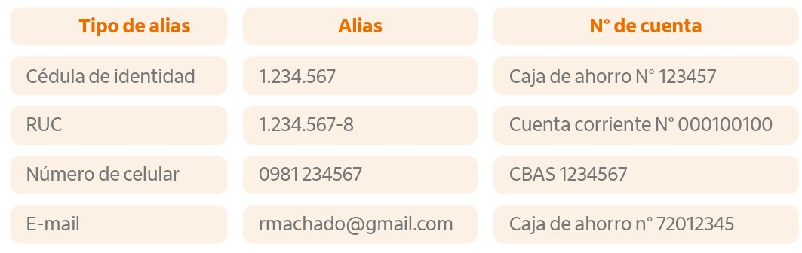

Tipos de Alias
Se encuentran disponibles cuatro tipos de alias que pueden vincularse, siempre que estén registrados previamente en los sistemas del Banco.
¿Cuántos Alias de Itaú se puede activar?
- Se pueden tener varios, sin embargo, cada alias solo puede estar vinculado a una cuenta.
Ejemplo:

¿Con qué tipo de cuentas se puede crear?
- Cuenta de ahorro
- Cuenta Corriente
- Cuenta básica
Exclusivo para cuentas en moneda guaraníes

❓ Preguntas Frecuentes
¿Con el alias Itaú solo se podrán recibir transferencias hasta Gs. 5.000.000.?
Podrá recibir transferencias por cualquier importe, exclusivamente en moneda guaraníes.
Si ya se tiene vinculado la cédula de identidad como alias en otra entidad y se quiere vincular a una cuenta Itaú, ¿cómo es el proceso?
Primero deberá eliminar el alias asociado a su cédula de identidad en la otra entidad, y luego dar de alta su alias en Itaú. En dicha entidad podrá continuar operando sin inconvenientes utilizando cualquiera de los otros tipos de alias mencionados anteriormente.
Si se quiere cambiar de tipo de alias Itaú de una cuenta, ¿Cómo se hace?
Inicialmente se debe eliminar el alias Itaú, y luego seleccionar el nuevo tipo de alias Itaú deseado.
¿Dónde se visualiza el detalle de alias Itaú creados?
Puede visualizarse a través de los distintos canales digitales disponibles.
¿La creación y eliminación del alias Itaú es en línea?
Una vez creado su alias Itaú, recibirá la confirmación por correo electrónico. Podrá realizar las operaciones en línea los 7 días de la semana, las 24 horas del día.
¿Un cliente Persona Jurídica podrá vincular un alias de correo y/o celular?
Desde el sitio administrador en la web 24 Horas Negocios, el cliente podrá visualizar los correos y celulares que se encuentran validados en catastro. Si el cliente desea incluir algún contacto, deberá realizar el procedimiento de actualización de datos que se valida en un plazo de 24hs hábiles como plazo mínimo.
¿Desde que sitio el Cliente Persona Jurídica podrá crear su alias Itaú?
El registro de alias será exclusivo desde el sitio administrador en la web 24 Horas Negocios, ingresando en la sección Solicitudes > Alias.
¿Qué pasa si el Administrador no recuerda su pin administrador o se encuentra bloqueado? ¿Podría crear por otro medio?
El desbloqueo o reseteo del PIN administrador se puede realizar contactando al SAC o a su gerente comercial.
El registro de alias será exclusivo desde el sitio administrador en la web 24 Horas Negocios, ingresando en la sección Solicitudes > Alias.
OBS: Próximamente se encontrará disponible la opción de desbloqueo y reseteo al momento de ingresar el PIN para acceder al sitio administrador, de manera que el cliente pueda autogestionarse con un flujo 100% digital.
¿Desde que sitio el Cliente Persona Jurídica podrá crear su alias Itaú?
El registro de alias será exclusivo desde el sitio administrador en la web 24 Horas Negocios, ingresando en la sección Solicitudes > Alias.
¿La experiencia del cliente Persona Jurídica para la carga de sus transferencias cambiaría?
El flujo de transferencia no presenta cambios, el cliente podrá realizarlas de la misma manera que lo hace actualmente, inclusive una vez habilitada la opción transaccional por el BCP, el autorizador seguirá verificando los datos de la transferencia a como hoy se encuentra disponible, solamente añadiendo el dato del alias.